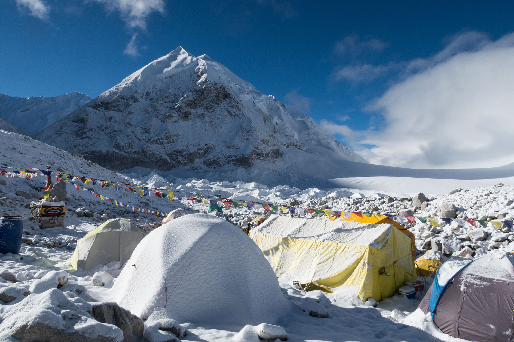
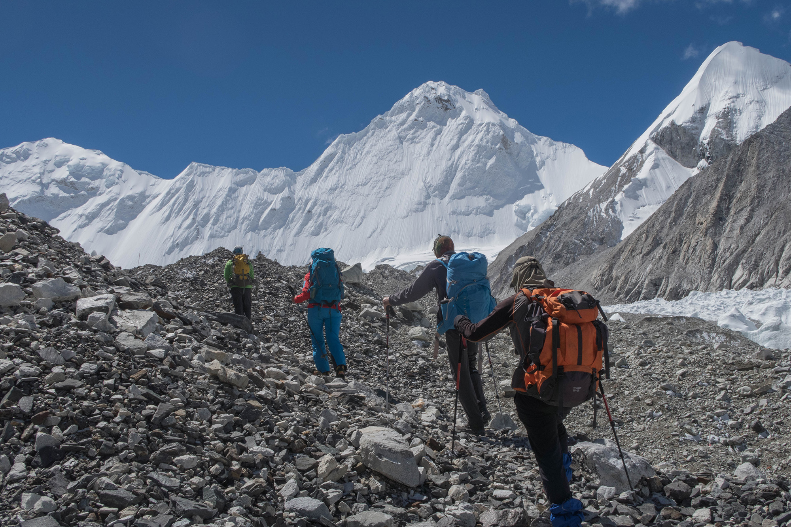
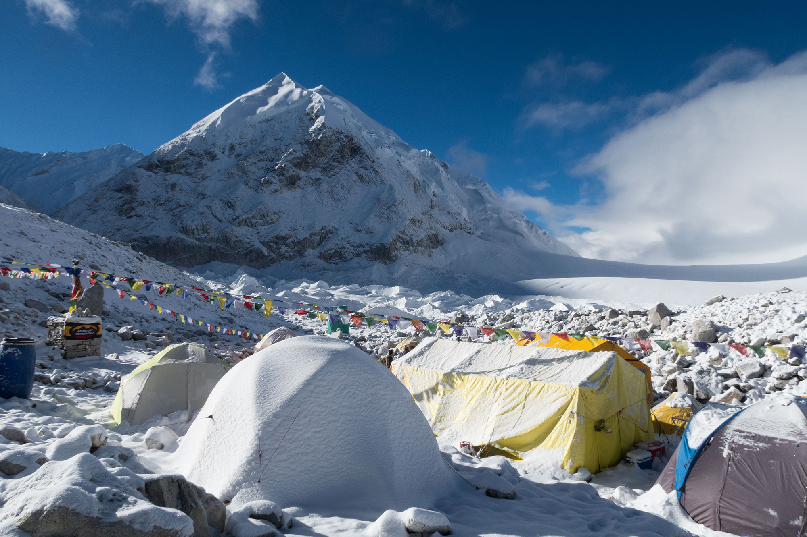
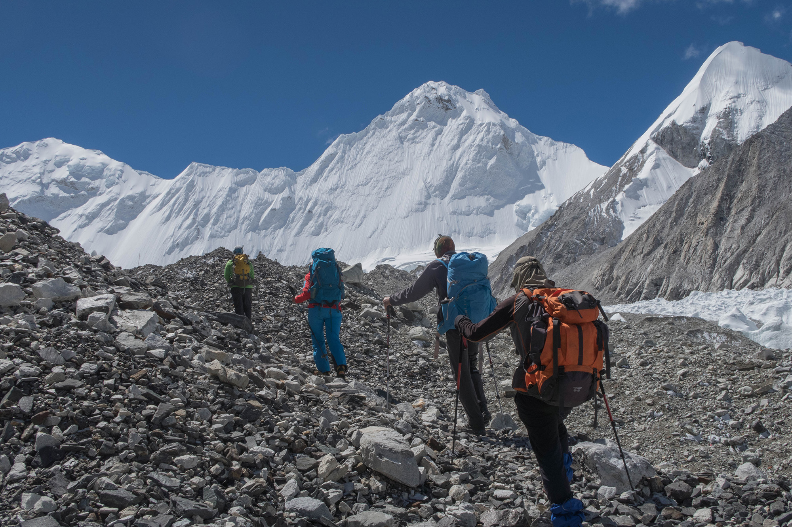

CHO OYU
A pristine trekking circuit which allows you to circle Mt. Cho Oyu,word's 6th highest peak.
Cho Oyu (Nepali: चोयु; Tibetan: ཇོ་བོ་དབུ་ཡ) is the sixth highest mountain in the world at 8,188 metres (26,864 ft) above sea level. Cho Oyu means "Turquoise Goddess" in Tibetan.[2] The mountain is the westernmost major peak of the Khumbu sub-section of the Mahalangur Himalaya 20 km west of Mount Everest. The mountain stands on the China-Nepal border.
 Just a few kilometres west of Cho Oyu is Nangpa La (5,716m/18,753 ft), a glaciated pass that serves as the main trading route between the Tibetans and the Khumbu's Sherpas. This pass separates the Khumbu and Rolwaling Himalayas. Due to its proximity to this pass and the generally moderate slopes of the standard northwest ridge route, Cho Oyu is considered the easiest 8,000 metre peak to climb.[3] It is a popular objective for professionally guided parties. The region, which was officially opened for visitors from abroad only in 1991, falls in the Restricted Areas and tourists must acquire Trekking Permit from the Department of Immigration in addition to the TIMS card for visit for visit to this region.
 Just a few kilometres west of Cho Oyu is Nangpa La (5,716m/18,753 ft), a glaciated pass that serves as the main trading route between the Tibetans and the Khumbu's Sherpas. This pass separates the Khumbu and Rolwaling Himalayas. Due to its proximity to this pass and the generally moderate slopes of the standard northwest ridge route, Cho Oyu is considered the easiest 8,000 metre peak to climb.[3] It is a popular objective for professionally guided parties. The region, which was officially opened for visitors from abroad only in 1991, falls in the Restricted Areas and tourists must acquire Trekking Permit from the Department of Immigration in addition to the TIMS card for visit for visit to this region.